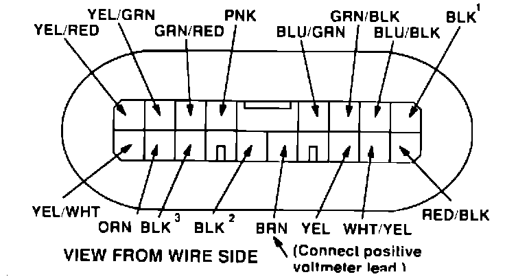

Information Center - Distance to Empty Reads ``N/A''
May 30, 1989BULLETIN NO. 89-010
YEAR '88 - 89
MODEL LEGEND
VIN APPLICATION See VEHICLES AFFECTED
Information Center Displays:
DISTANCE TO EMPTY - N/A
SYMPTOM
After filling the fuel tank and driving at least 50-70 miles, the Information Center's DISTANCE TO EMPTY display reads "N/A."
VEHICLES AFFECTED
'88 Coupe L and LS: All '88 Sedan LS: All
'89 Coupe LS: through JH4KA3 ... KC015224
'89 Sedan LS: through JH4KA4 ... KC027229
DIAGNOSIS
Ask the customer the following questions:
^ Was the fuel tank filled with the engine running or with the ignition switch in the II/ON position?
^ Was the fuel filler door opened again after the fuel tank was filled (such as when washing the car)?
^ Was the fuel tank only partially filled?
A "yes" answer to any of these questions would explain why the DISTANCE TO EMPTY display reads N/A. Explain to the customer that the Information Center must get an ignition switch "OFF" signal, a fuel filler door "OPEN" signal, and a fuel tank "FULL" signal in order to reset and display the DISTANCE TO EMPTY properly. To reset the DISTANCE TO EMPTY in this situation, simply refill the fuel tank completely with the ignition switch off.
If the answer to all of the questions above was "no," test the fuel filler door switch as follows:

With the 16P connector still plugged into the Information Center Control Unit, connect a voltmeter positive lead to the BRN terminal and the negative lead to body ground. Turn the ignition switch on.
^ With the fuel filler door opener lever in its normal position (down), the voltmeter should read 5V. If not. check the fuel filler door switch and the BRN wire for a short to ground.
^ With the fuel filler door opener lever pulled up. the voltmeter should read less than 1 V. If not. check for an open in the BRN wire or a poor ground at G15. If the wire and ground are OK, replace the fuel filler door switch.
CORRECTIVE ACTION
If diagnosis shows that neither the customer nor the fuel door switch was at fault, replace the Information Center control unit with the new one listed under PARTS INFORMATION,
PARTS INFORMATION
Information Center Control Unit:
P/N 39650-SG0-A06RMD
WARRANTY CLAIM INFORMATION
Carefully pack the original control unit in the replacement-part carton. then ship it to AHM Warranty Parts Inspection (Gardena) using the procedures outlined in the Service Operations Manual.
In-warranty:
The normal warranty applies.
Out-of-warranty:
Any repair performed after warranty expiration may be eligible for goodwill consideration by the District Service Manager. You must request consideration, and get the DSM's decision, before starting work.
Operation number: 727530 (fuel filler door switch test)
736110 (control unit replacement)
Flat rate time: 0.2 hour (fuel filler door switch test)
0.5 hour (control unit replacement)
Failed P/N: 39650-SG0-A05
Defect code: 064
Contention code: B99